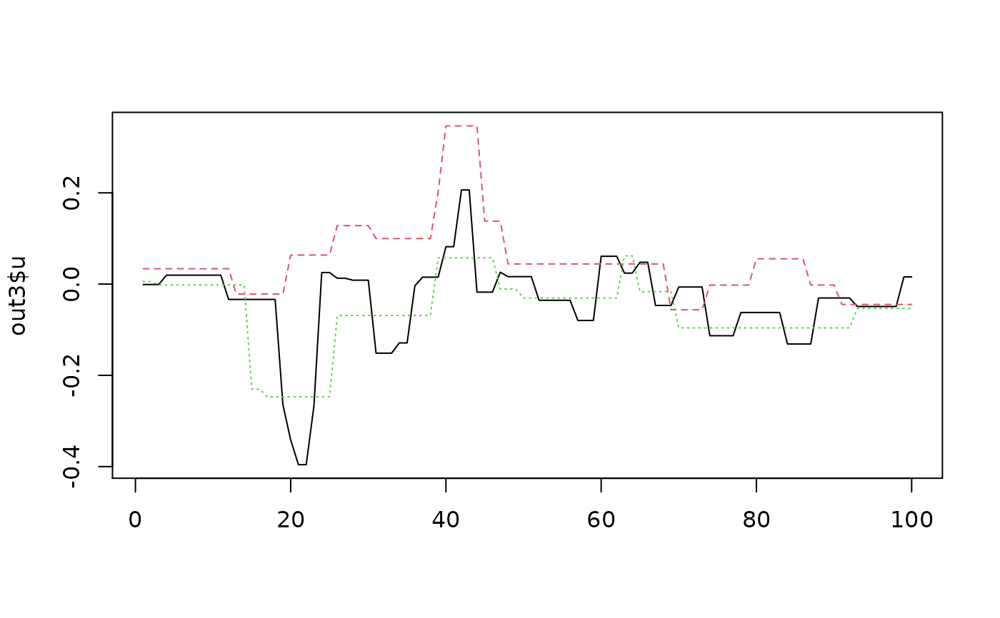
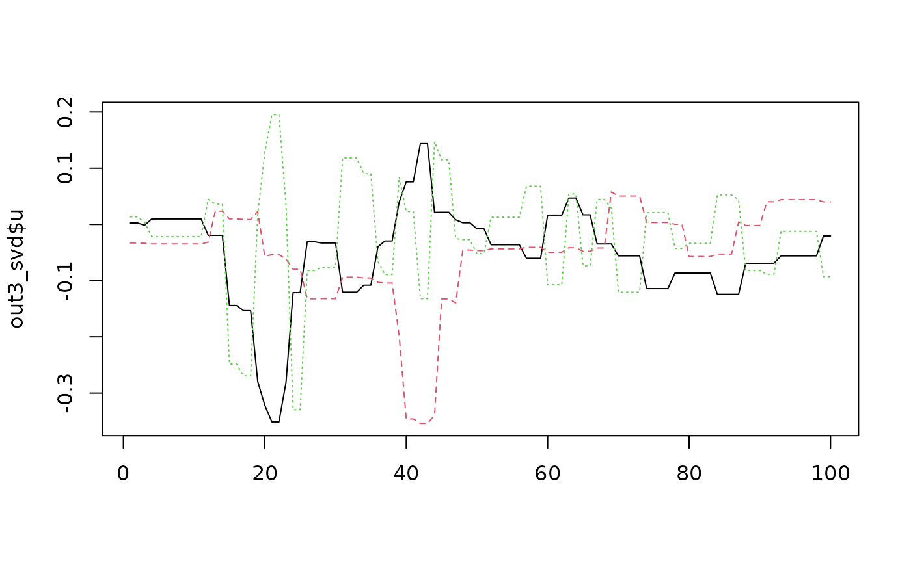

PCA Trend Filtering. From: https://github.com/Lei-D/PCATF
PCATF(
X,
X.svd = NULL,
solve_directions = TRUE,
K = NULL,
lambda = 0.5,
niter_max = 1000,
TOL = 1e-08,
verbose = FALSE
)| X | A numerical data matrix (observations x variables). |
|---|---|
| X.svd | (Optional) The svd decomposition of X. Save time by providing this argument if the svd has already been computed. Default NULL. |
| solve_directions | Should the principal directions be solved for? These will be needed to display the leverage images for outlying observations. |
| K | (Optional) The number of trend-filtered PCs to solve for. If not provided, it will be set to the number of regular PCs with variance above the mean, up to 100 PCs. |
| lambda | The trend filtering parameter; roughly, the filtering intensity. Default is 0.5 . Can be NULL (lets algorithm decide). |
| niter_max | The number of iterations to use for approximating the PC. |
| TOL | The maximum 2-norm between iterations to accept as convergence. |
| verbose | Print statements about convergence? |
SVD The trend-filtered SVD decomposition of X (list with u, d, v).
set.seed(12345)
U = matrix(rnorm(100*3),ncol=3)
U[20:23,1] = U[20:23,1] + 3
U[40:43,2] = U[40:43,2] - 2
U = svd(U)$u
D = diag(c(10,5,1))
V = svd(matrix(rnorm(3*20),nrow=20))$u
X = U %*% D %*% t(V)
out3 = PCATF(X, K=3, lambda=.75)
matplot(out3$u, ty='l')

out3$d
#> [1] 8.004949 2.679672 1.954460
plot(rowSums(out3$u^2), ty='l')
# Orthonormalized
out3_svd = svd(out3$u)
matplot(out3_svd$u, ty='l')

out3_svd$d
#> [1] 1.2944026 1.0025965 0.5650859
plot(rowSums(out3_svd$u^2), ty='l')